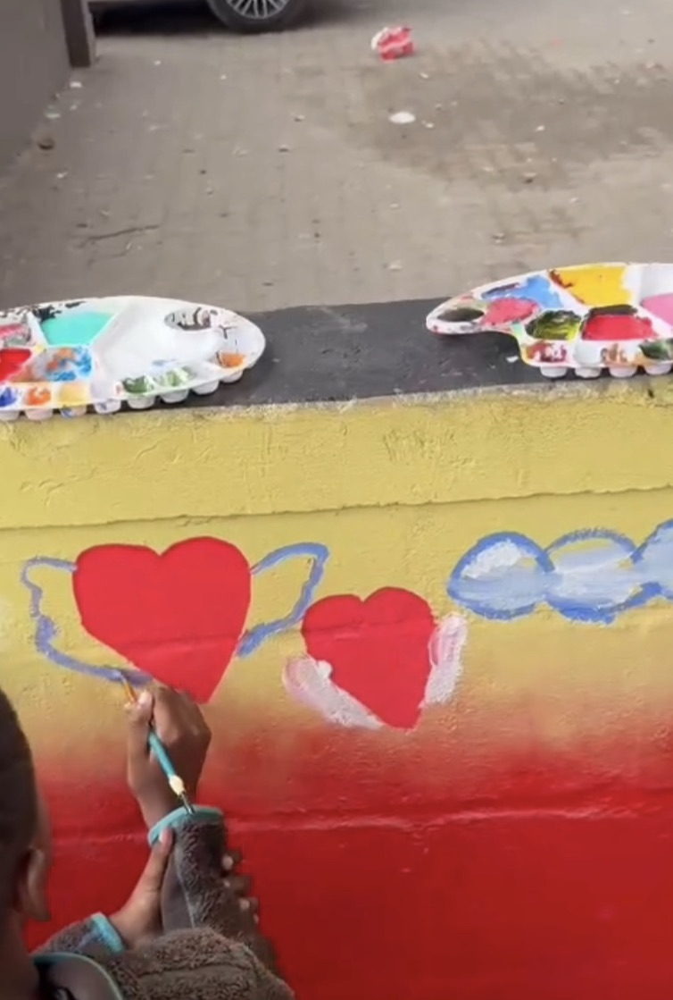

July 2026

Art in the neighbourhood
Mandela Day at Hamilton Nake
“It is in your hands to make of our world a better place.” The children brought color into the heart of Langa, painting a wall for everyone to share. They honoured a legacy while helping paint the future.